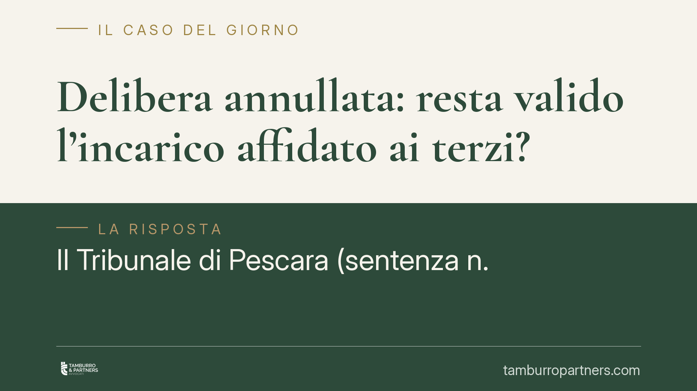
Delibera annullata: resta valido l'incarico affidato ai terzi?
Il Tribunale di Pescara (sentenza n. 291/2026) affronta un nodo ricorrente nella gestione condominiale: cosa accade ai contratti stipulati con professionisti e imprese sulla base d…
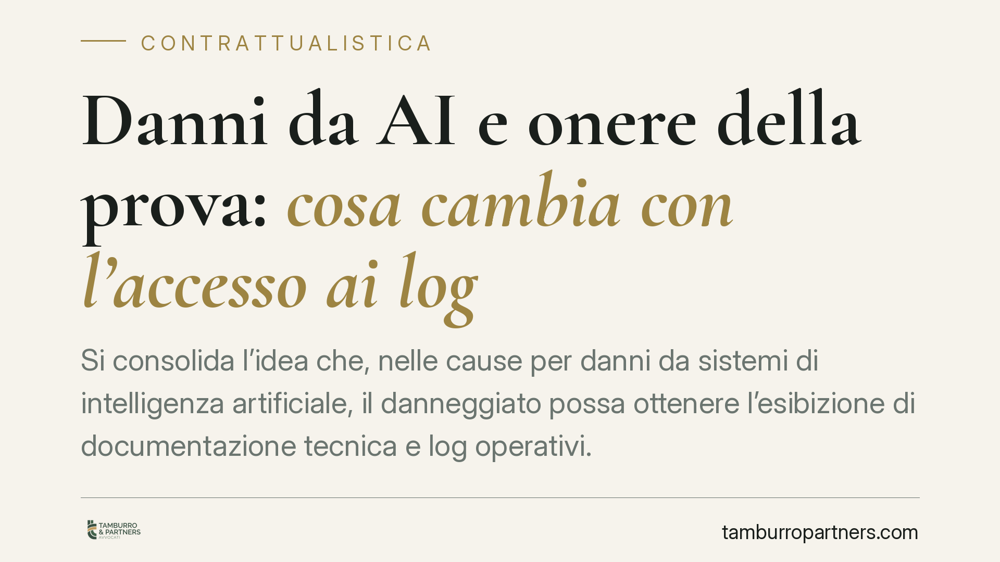
Danni da AI e onere della prova: cosa cambia con l'accesso ai log
Si consolida l'idea che, nelle cause per danni da sistemi di intelligenza artificiale, il danneggiato possa ottenere l'esibizione di documentazione tecnica e log operativi. Un mecc…

Decadenza dal beneficio di inventario: i limiti fissati dalla Cassazione
Con l'ordinanza n. 24491/2026 la Cassazione precisa un punto delicato per l'erede che accetta con beneficio di inventario: la decadenza prevista dall'articolo 500 del Codice civile…

Infortunio sul lavoro e onere della prova: cosa spetta al lavoratore
Nei giudizi per infortunio sul lavoro la Sezione Lavoro della Cassazione ha ribadito un principio decisivo: il lavoratore non deve indicare la singola norma antinfortunistica viola…
Assemblea online: l'amministratore può inviare il link via email o WhatsApp?
Le Linee guida 2025 del Garante Privacy chiariscono un dubbio ricorrente: l'amministratore può trasmettere il link dell'assemblea online usando i recapiti dell'anagrafe condominial…

Abusi edilizi e nuovo proprietario: chi risponde dopo l'acquisto
Chi compra un immobile con abusi edilizi commessi da altri non finisce sotto processo penale: il reato è personale. Ma la demolizione e il ripristino seguono il bene e colpiscono a…
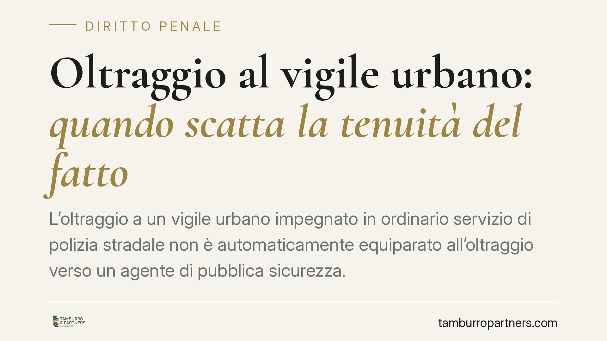
Oltraggio al vigile urbano: quando scatta la tenuità del fatto
L'oltraggio a un vigile urbano impegnato in ordinario servizio di polizia stradale non è automaticamente equiparato all'oltraggio verso un agente di pubblica sicurezza. La distinzi…
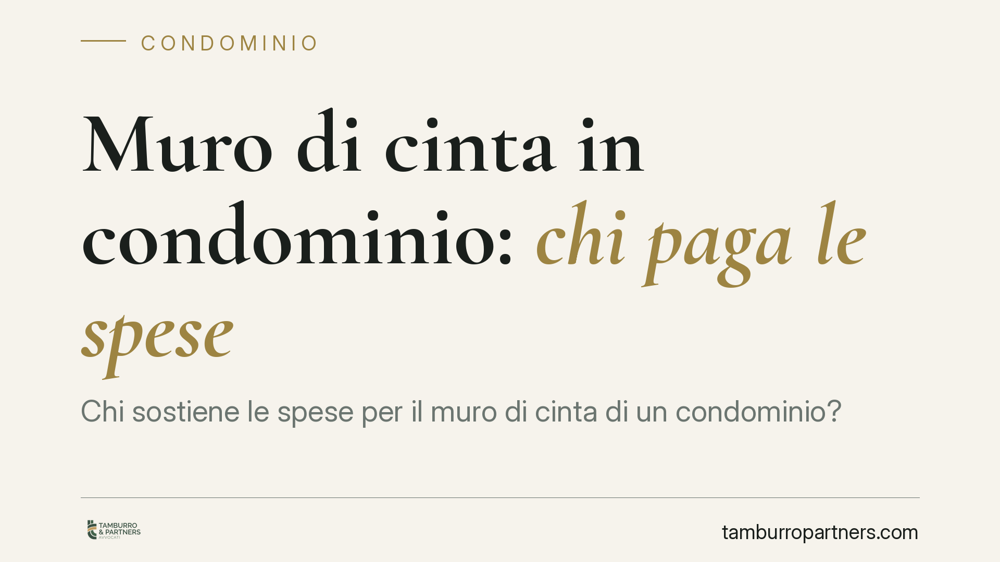
Muro di cinta in condominio: chi paga le spese
Chi sostiene le spese per il muro di cinta di un condominio? Una recente pronuncia della Corte di Cassazione conferma che il muro con funzione di contenimento e delimitazione dell'…

AI Act e sanzioni: cosa rischiano imprese e professionisti
L'AI Act è pienamente operativo e il decreto di attuazione italiano completa l'apparato sanzionatorio. Le violazioni espongono imprese e professionisti a sanzioni amministrative fi…
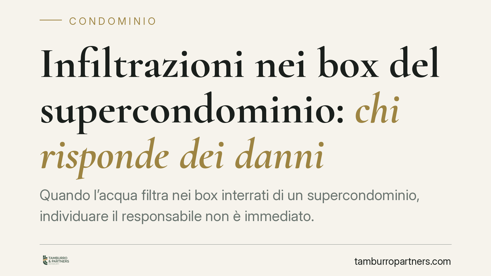
Infiltrazioni nei box del supercondominio: chi risponde dei danni
Quando l'acqua filtra nei box interrati di un supercondominio, individuare il responsabile non è immediato. La giurisprudenza àncora la responsabilità al controllo effettivo sul be…
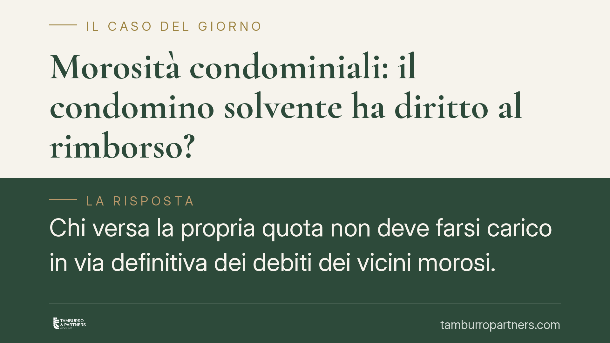
Morosità condominiali: il condomino solvente ha diritto al rimborso?
Chi versa la propria quota non deve farsi carico in via definitiva dei debiti dei vicini morosi. Una recente pronuncia del Tribunale di Napoli torna sul tema, annullando la deliber…

Bonus edilizi e subappalto: l'appaltatore deve pagare anche senza incasso?
Il subappaltatore ha diritto al compenso anche se l'appaltatore non ha incassato i crediti da bonus edilizi. Il mancato realizzo della cessione non è impossibilità sopravvenuta: le…
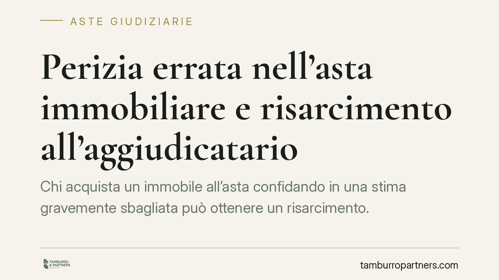
Perizia errata nell'asta immobiliare e risarcimento all'aggiudicatario
Chi acquista un immobile all'asta confidando in una stima gravemente sbagliata può ottenere un risarcimento. Una recente ordinanza della Corte di Cassazione ha qualificato il danno…
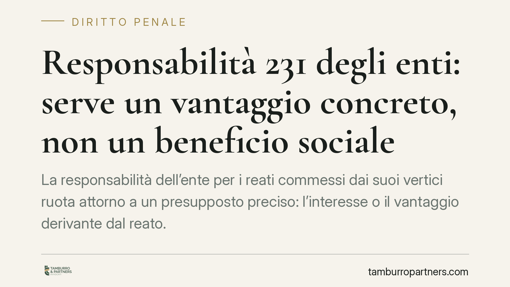
Responsabilità 231 degli enti: serve un vantaggio concreto, non un beneficio sociale
La responsabilità dell'ente per i reati commessi dai suoi vertici ruota attorno a un presupposto preciso: l'interesse o il vantaggio derivante dal reato. Una recente pronuncia di l…

Prodotti difettosi: la nuova responsabilità si estende al software
La direttiva (UE) 2024/2853 ridisegna la responsabilità da prodotto difettoso: la nozione di prodotto comprende ora anche software e aggiornamenti, si amplia la platea dei soggetti…
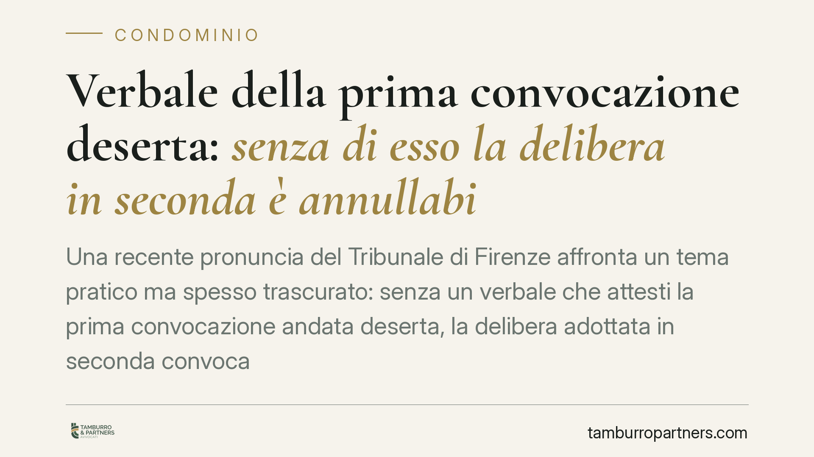
Verbale della prima convocazione deserta: senza di esso la delibera in seconda è annullabile
Una recente pronuncia del Tribunale di Firenze affronta un tema pratico ma spesso trascurato: senza un verbale che attesti la prima convocazione andata deserta, la delibera adottat…

Guida in stato di ebbrezza: l'avviso al difensore può essere orale
Con la sentenza n. 9235/2026 la Corte di Cassazione precisa i contorni dell'avviso al difensore nell'accertamento alcolemico. L'informazione può essere data oralmente, a condizione…

Legge sui caregiver: le nuove tutele e il contributo da 400 euro
Il disegno di legge sui caregiver familiari, approvato dalla Camera e ora al Senato, costruisce per la prima volta uno statuto organico di chi assiste un familiare non autosufficie…
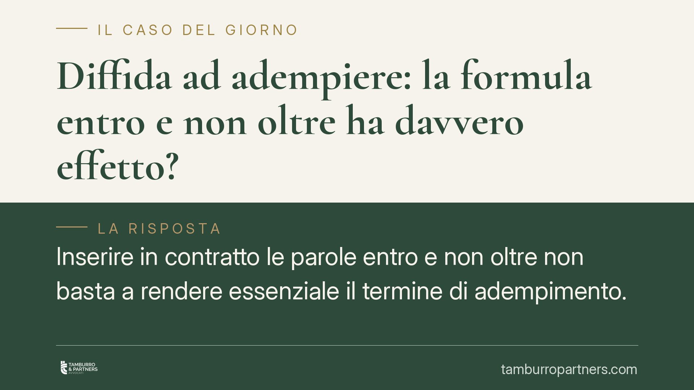
Diffida ad adempiere: la formula "entro e non oltre" ha davvero effetto?
Inserire in contratto le parole "entro e non oltre" non basta a rendere essenziale il termine di adempimento. Lo ribadisce la Cassazione: serve una chiara volontà delle parti sulla…

Verbali ispettivi INPS: quando possono entrare in appello
Con l'ordinanza n. 24523/2026 la Cassazione chiarisce un punto delicato del rito del lavoro: i verbali ispettivi INPS possono essere acquisiti anche in secondo grado quando risulta…
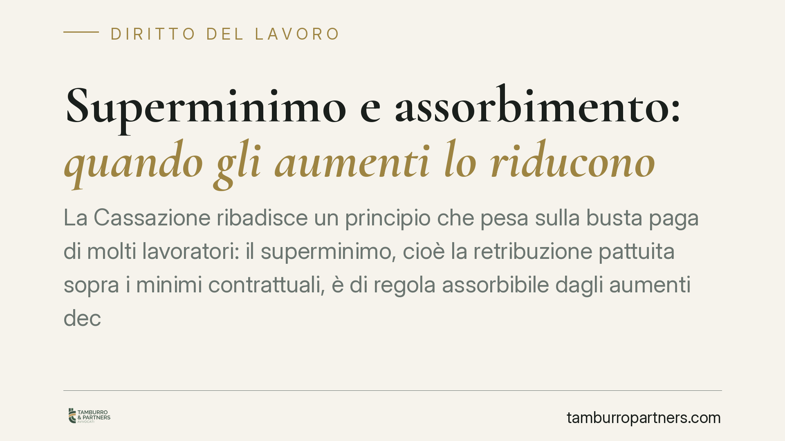
Superminimo e assorbimento: quando gli aumenti lo riducono
La Cassazione ribadisce un principio che pesa sulla busta paga di molti lavoratori: il superminimo, cioè la retribuzione pattuita sopra i minimi contrattuali, è di regola assorbibi…

Licenziamento del defunto: un solo erede può impugnarlo
Il Tribunale di Venezia ha affrontato un nodo poco esplorato: chi può impugnare il licenziamento di un lavoratore deceduto. La risposta è che basta un singolo erede ad attivare la …

Fideiussioni e clausole abusive: la CGUE ridisegna il giudicato implicito
Con la pronuncia C-667/24 la Corte di Giustizia UE torna sul rapporto tra giudicato implicito e tutela del consumatore. Il principio: il giudice deve poter verificare l'abusività d…

Tabelle millesimali sbagliate: quando e come correggerle
Una tabella millesimale che non somma a 1000 o che riporta valori sbagliati non è una fatalità da subire. Il Codice civile prevede strumenti precisi per rettificare o rivedere i mi…

Convocazione dell'assemblea condominiale: il sito web non basta
La pubblicazione dell'avviso di convocazione sul sito internet del condominio non è una forma valida di comunicazione. Lo ha chiarito il Tribunale di Lecce con la sentenza n. 265/2…

Assegno all'ex coniuge: l'INPS non può sospendere la trattenuta senza giudicato
Finché la sentenza di divorzio non è definitiva, l'assegno trattenuto dall'INPS sulla pensione dell'obbligato continua a essere dovuto. L'ente non può interrompere il versamento in…

Patto di prova con mansioni in inglese: quando è valido
La Corte d'Appello di Brescia (sent. n. 244/2026) ha confermato la validità di un patto di prova che indicava la qualifica in inglese, 'Marketing and Communication Manager'. Per i …
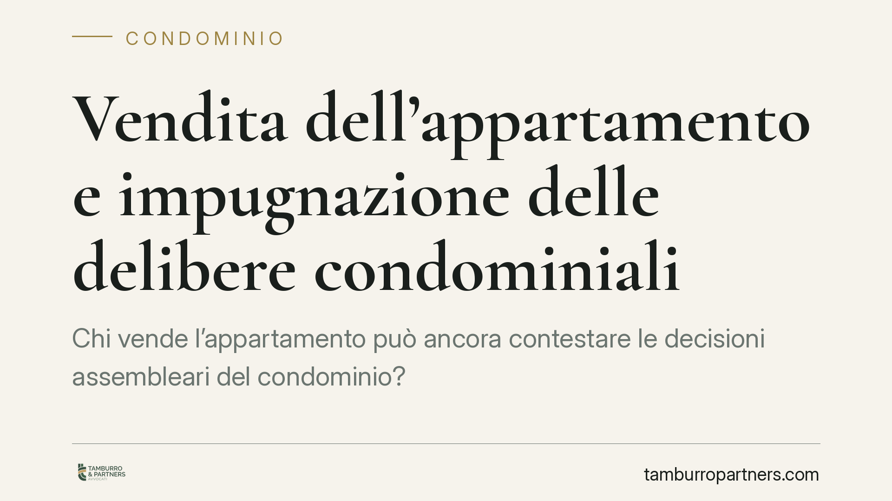
Vendita dell'appartamento e impugnazione delle delibere condominiali
Chi vende l'appartamento può ancora contestare le decisioni assembleari del condominio? Il Tribunale di Palermo, con la sentenza 3605/2026, traccia una linea netta: dipende dal tip…
Selezione del personale e intelligenza artificiale: l'algoritmo non decide da solo
Sempre più aziende usano software di intelligenza artificiale per filtrare curriculum e valutare candidati. Ma la Legge 132/2025 e il Regolamento europeo sull'IA fissano un limite …
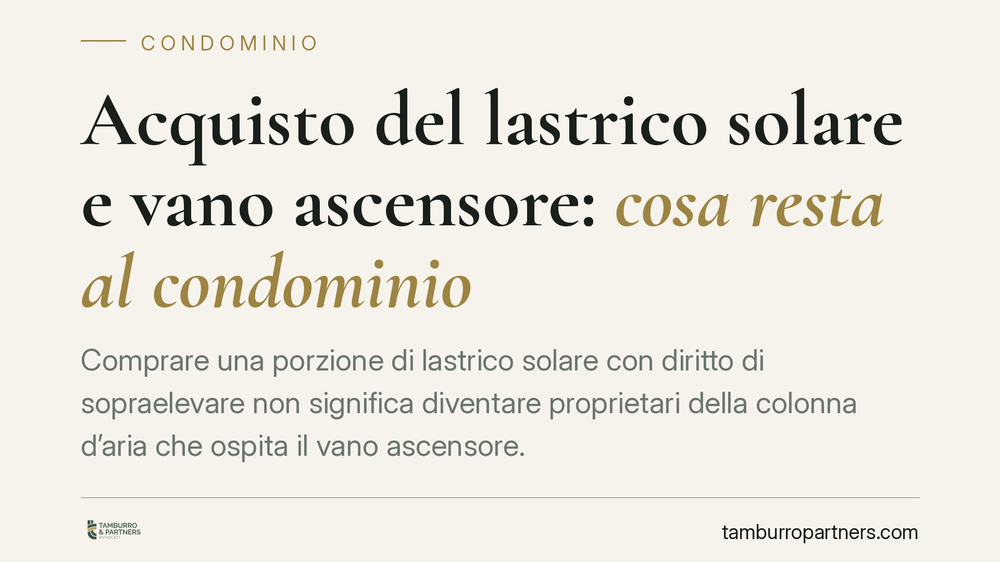
Acquisto del lastrico solare e vano ascensore: cosa resta al condominio
Comprare una porzione di lastrico solare con diritto di sopraelevare non significa diventare proprietari della colonna d'aria che ospita il vano ascensore. Lo ribadisce la Cassazio…